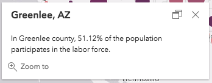
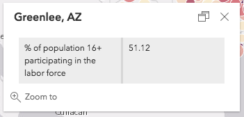

Arcade - expression language
Overview
Arcade is a lightweight and secure expression language written for use in the ArcGIS platform. Like other expression languages, it can perform mathematical calculations and evaluate logical statements. It was designed specifically for creating custom visualizations and labeling expressions in the ArcGIS Platform, allowing users to write, share, and execute custom expressions in ArcGIS Pro, ArcGIS Online, the ArcGIS Runtime APIs, and the ArcGIS API for JavaScript.
What makes Arcade particularly unique to other expression and scripting languages is its inclusion of geometry functions. In the initial release of Arcade, geometries can be created and referenced. In future releases, other geometry functions may be added allowing you to calculate areas and lengths, and perform simple overlay operations in more complex expressions.
Syntax
In many respects Arcade's syntax is similar to JavaScript, allowing you to declare variables, perform logical operations, take advantage of built-in functions, and write custom functions. However, there are key differences between the two languages. Read the full Arcade documentation including guides and the function reference for more details on how to write an Arcade expression. You also have access to a playground that provides an environment for testing custom scripts based on your data.
Global variables may be used within Arcade expressions, giving them access to external data. Global variables contain external values that are passed to a script during its execution – based on the execution profile. The $feature global variable allows you to access field values for features in a FeatureLayer. Each field value is also considered a global variable. Field values are referenced using the following syntax:
$feature.fieldName
This makes it easy to perform simple calculations using field values at runtime.
// calculates the % of voters who voted for a
// democratic candidate
($feature.DEM_VOTES / $feature.TURNOUT ) * 100
Arcade is only executed within the context, or profile, in which it is understood. Within JavaScript apps, Arcade expressions are always referenced as a string value. You may use Arcade to write simple single-line expressions, or more complex multi-line epxressions.
When writing single-line expressions, you can simply wrap it in double or single quotes.
renderer.valueExpression = "Round( ($feature.AGE_18UP / $feature.TOTAL_POP) * 100 )";
When writing multi-line expressions, we recommend you place it in a separate <script> tag outside the JavaScript portion of the app, and set the type to text/plain with a unique ID you can use to reference the script in the appropriate place within JavaScript.
<script type="text/plain" id="adult-population">
// place multi-line Arcade expression here
</script>
Then you can refrence the script as a string value by calling the document.getElementById() method.
renderer.valueExpression = document.getElementById("adult-population").text;
See the example snippets below and the Create a custom visualization using Arcade sample for more context.
Profiles
Arcade was designed for use in several profiles. A profile is a context in which the expression is understood and used. In the ArcGIS API 4.4 for JavaScript, Arcade supports two profiles: visualization and popups. Other profiles considered for future releases include labeling and feature filtering.
Visualization
In the visualization profile, Arcade allows you to calculate values for each feature in a FeatureLayer or SceneLayer at runtime and use those values as the basis for a data-driven visualization. This is an alternative approach to creating data-driven visualizations based on a single field value in the layer. To accomplish this, an Arcade expression may be passed to the valueExpression property in ClassBreaksRenderer, UniqueValueRenderer or any of the visual variables: color, size, opacity, and rotation instead of referencing a field/normalizationField or a JavaScript function.
Arcade supports creating visualizations for FeatureLayer and SceneLayer only.
Other layer types that accept ClassBreaksRenderer and UniqueValueRenderer, such as MapImageLayer, do not support Arcade.
When used in a ClassBreaksRenderer or any of the visual variables, the expression must evaluate to a number. Expressions may evaluate to either strings or numbers in UniqueValueRenderer.
In the example below, an Arcade expression is used in the valueExpression property of a UniqueValueRenderer. In this case, we are creating a visualization for a FeatureLayer representing U.S. counties. The service has three fields that identify the number of republicans, democrats, and independent/non-party voters in each county. We would like to visualize each county based on which party outnumbers the others. Since the service does not contain a field indicating the predominant party, we can write an Arcade expression to identify that for each feature.
First, write the Arcade expression in a script tag with a unique ID.
<script type="text/plain" id="winning-party">
// Write the expression and reference the value
// of each field with a meaningful variable name within
// the expression. Then calculate the max number with
// the Max() function and use Decode() to return a string
// value representing the party whose field value matches
// the max value.
var republican = $feature.MP06025a_B;
var democrat = $feature.MP06024a_B;
var independent = $feature.MP06026a_B;
var parties = [republican, democrat, independent];
// Decode() and Max() are built-in Arcade functions
return Decode( Max(parties),
republican, 'republican',
democrat, 'democrat',
independent, 'independent',
'n/a');
</script>
Then reference the script as a string value using document.getElementById() within the appropriate valueExpression property in the JavaScript.
// Assign the expression to the `valueExpression` property and
// set up the unique value infos based on the decode values
// you set up in the expression.
var winnerArcade = document.getElementById("winning-party").text;
var renderer = new UniqueValueRenderer({
valueExpression: winnerArcade,
valueExpressionTitle: "Counties by dominant party among registered voters",
uniqueValueInfos: [{
value: "democrat",
symbol: createSymbol("#00c3ff"),
label: "Democrat"
}, {
value: "republican",
symbol: createSymbol("#ff002e"),
label: "Republican"
}, {
value: "independent",
symbol: createSymbol("#faff00"),
label: "Independent/non-affiliated"
}]
});
You can also add an opacity visual variable to the renderer to visualize the relative strength of the predominant party in each county. Counties where more people come from a single party will be drawn with high opacity, while those where the proportion of people from each party are relatively equal will be drawn with low opacity.
First, write the expression in a <script> tag.
<script type="text/plain" id="strength">
// Write the expression and reference the value
// of each field with a meaningful variable name within
// the expression. Then calculate the max number with
// the Max() function and the total using Sum().
// Calculate the share of the max population within the
// county. This value will be between 33 - 100 and will
// be used to determine the feature's opacity.
// Note the value is explicitly returned; it could also
// be implicitly returned like the previous example
var republican = $feature.MP06025a_B;
var democrat = $feature.MP06024a_B;
var independent = $feature.MP06026a_B;
var parties = [republican, democrat, independent];
var total = Sum(parties);
var max = Max(parties);
return (max / total) * 100;
</script>
Then reference it in JavaScript as a string value.
// Assign the expression to the `valueExpression` property and
// set up the unique value infos based on the decode values
// you set up in the expression.
var strengthArcade = document.getElementById("strength").text;
var opacityVV = {
type: "opacity",
valueExpression: strengthArcade,
stops: [
{ value: 33, opacity: 0.1 },
{ value: 50, opacity: 1.0 }
]
};
// Add the visual variable to the renderer
renderer.visualVariables = [ opacityVV ];
Note that if Arcade expressions are set on a layer's renderer after it loads, the fields referenced in the expression must be manually included in the layer's outFields. However, if a renderer uses an Arcade expression and is set within a layer's constructor, then the fields referenced in the expression are automatically included in a layer's outFields.
View the Create a custom visualization using Arcade sample to see this example in context.
Popups
Arcade expressions can also be referenced within the content of a PopupTemplate. Similar to the visualization profile, this is useful for situations when you want to display data that isn't present as an attribute value in your FeatureLayer instance.
For example, the Reference Arcade expressions in PopupTemplate sample displays a layer containing labor statistics for each U.S. county. Some attributes include unemployment rate, population, and the number of people participating in the labor force. It does not have an attribute for labor force participation rate. We can use Arcade to calculate that for us at runtime.
// labor force participation rate
Round(($feature.CIVLBFR_CY / $feature.POP_16UP)*100,2)
The values returned from this expression can be used to visualize the layer and/or displayed in the layer's popupTemplate. To view the value in the popup, we must reference it in the expressionInfos property of the PopupTemplate and assign it a name and a title.
layer.popupTemplate = {
expressionInfos: [{
name: "participation-rate",
title: "% of population 16+ participating in the labor force",
expression: "Round(($feature.CIVLBFR_CY / $feature.POP_16UP)*100,2)"
}],
content: "In {NAME} county, {expression/participation-rate}% of the population"
+ " participates in the labor force."
};
Notice that once the expression exists in the expressionInfos property, you can reference the value returned from the expression using the {expession/expression-name} placeholder template within the content of the PopupTemplate. The Popup's content would display the following after the user clicked a feature representing Greenlee, AZ:

You can also reference values returned from Arcade expressions inside the fieldInfos property of the PopupTemplate's content so they can be displayed in tabular format. Just reference the name of the expression in the fieldName property of the object. Remember to use the expression/expression-name syntax.
layer.popupTemplate = {
expressionInfos: [{
name: "participation-rate",
title: "% of population 16+ participating in the labor force",
expression: "Round(($feature.CIVLBFR_CY / $feature.POP_16UP)*100,2)"
}],
content: [{
type: "fields",
fieldInfos: [{
fieldName: "expression/participation-rate"
}]
}]
};
The popup will display the following:

Note that you can also take advantage of the formatting options of the PopupTemplate's fieldInfos property to format numbers returned from expressions.
View the Reference Arcade expressions in PopupTemplate sample to see this workflow in the context of a live sample application.